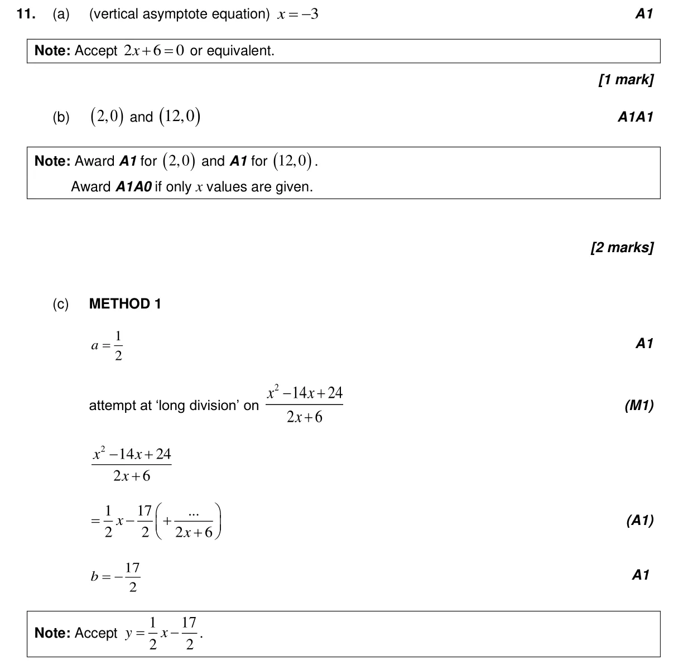
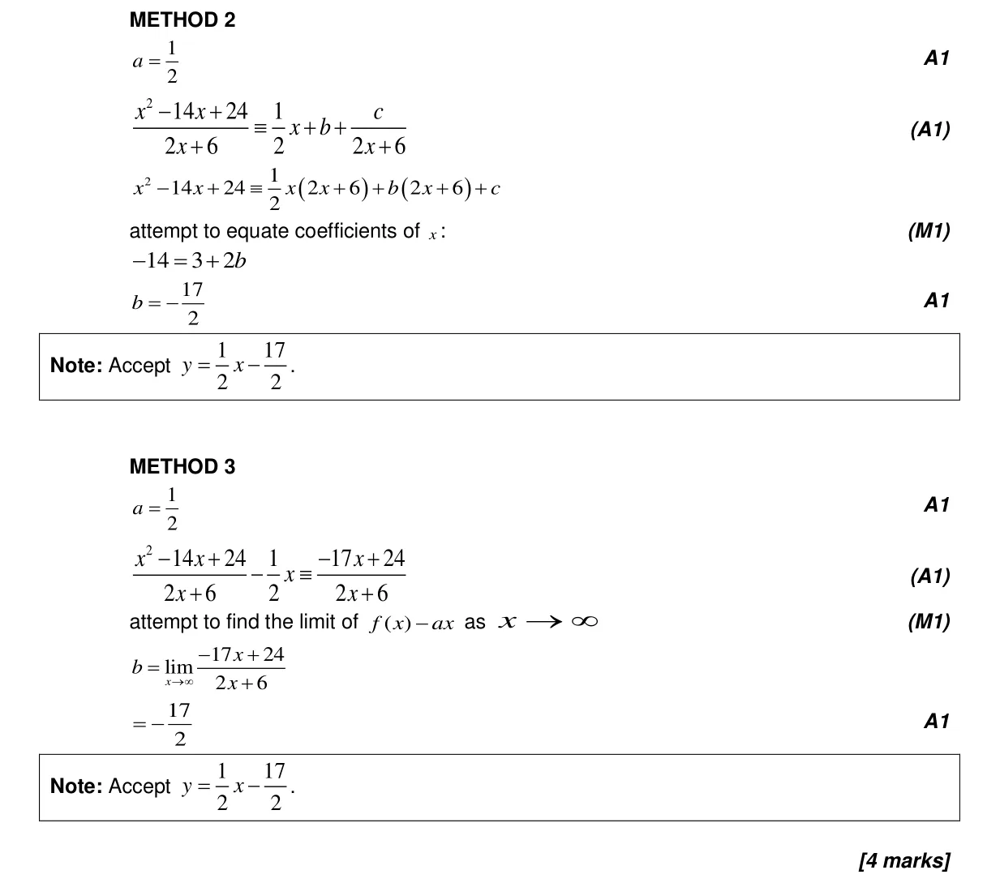
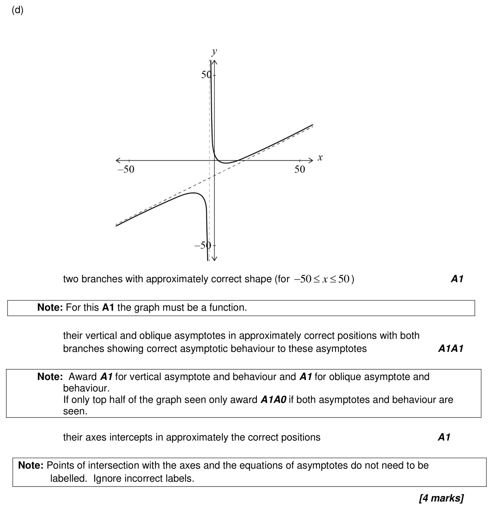
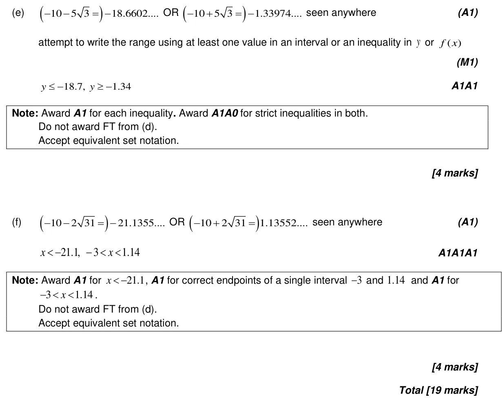

19 marks P2 TZ2 Section B Calculator 2.13 Rational functions with a quadratic numerator or denominator2.15 Solving inequalities g(x) ≥ f(x) graphically and analytically2.3 Graphs of functions2.2 Functions, notation, domain, range and inverse as reflection2.4 Key features of graphs Question Hide breakdown abcdef Markscheme 